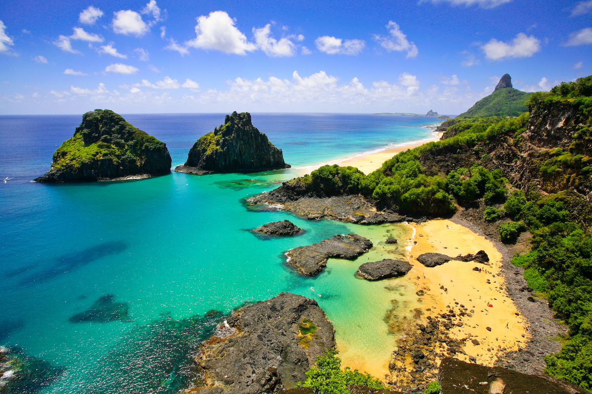

Cristo Redentor
Cristo Redentor é uma estátua art déco que retrata Jesus Cristo, localizada no topo do morro do Corcovado, a 709 metros acima do nível do mar, no Parque Nacional da Tijuca, com vista para a maior parte da cidade do Rio de Janeiro, Brasil. Em 2007 foi eleito informalmente como uma das novas sete maravilhas do mundo. Em 2012 a UNESCO considerou o Cristo Redentor como parte da paisagem do Rio de Janeiro incluída na lista de Patrimônios da Humanidade. O monumento foi concebido pelo engenheiro brasileiro Heitor da Silva Costa e construído em colaboração com o escultor francês Paul Landowski e com o engenheiro francês Albert Caquot, entre 1922 e 1931. Foi inaugurada no dia 12 de outubro de 1931, dia de Nossa Senhora Aparecida e fica no bairro de Santa Teresa.
Fernando de Noronha
Fernando de Noronha é um arquipélago brasileiro do estado de Pernambuco. Pertence à Mesorregião Metropolitana do Recife e à Microrregião de Fernando de Noronha. Formado por 21 ilhas, ilhotas e rochedos de origem vulcânica, ocupa uma área total de 26 km² — dos quais 17 km² são da ilha principal — e se situa no Oceano Atlântico, distante 360 km a nordeste de Natal, no Rio Grande do Norte, e 545 km a nordeste da capital pernambucana, Recife. As praias de Fernando de Noronha são promovidas para o turismo e o mergulho recreativo. Devido à Corrente Sul Equatorial, que empurra a água quente da África para a ilha, o mergulho a profundidades de 30 a 40 metros não exige uma roupa de mergulho. A visibilidade debaixo d'água pode chegar a até 50 metros.

Cataratas do Iguaçu
Cataratas do Iguaçu é um conjunto de cerca de 275 quedas de água no rio Iguaçu (na Bacia hidrográfica do rio Paraná), localizada entre o Parque Nacional do Iguaçu, Paraná, no Brasil, e o Parque Nacional Iguazú em Misiones, na Argentina, na fronteira entre os dois países. As Cataratas do Iguaçu participaram da campanha mundial de escolha das sete maravilhas naturais do mundo, organizada pela Fundação New 7 Wonders. As cataratas ficaram entre as 28 finalistas da campanha, que durou até o fim do ano 2011 quando foi atingido o número de 1 bilhão de votos.
Pão de Açúcar
Pão de Açúcar é um complexo de morros localizado no bairro da Urca e composto pelo morro do Pão de Açúcar (que dá nome ao complexo), morro da Urca e morro da Babilônia. Junto com a estátua do Cristo Redentor é o maior cartão-postal da cidade do Rio de Janeiro e um dos mais famosos do Brasil. Pelas características únicas, margeado pelas águas da baía de Guanabara, constitui-se em uma referência turística internacional para a cidade.
Possui como atração complementar o passeio de teleférico, interligando a Praia Vermelha e o Morro da Urca ao Pão de Açúcar. Conhecido como Bondinho do Pão de Açúcar, o teleférico foi idealizado em 1908 e inaugurado em 1912, tornando-se o primeiro teleférico instalado no país e o terceiro do mundo.
Maceió
Maceió é um município brasileiro, capital do estado de Alagoas, situado na microrregião homônima e mesorregião do Leste Alagoano, Região Nordeste do país. Maceió é a cidade que mais cresce no Nordeste, a 4° no Brasil e a 71° no mundo, de acordo um relatório da fundação City Mayors, dedicado a estudos urbanos. Com um mar lindo e esverdeado que encanta os olhos de turistas do mundo todo, Maceió se destaca pelas belas praias e formações de recifes. As diversas opções de entretenimento também facilitam a vida noturna. Próximo da cidade tem outros encantos, como Maragogi e a Costa dos Corais.